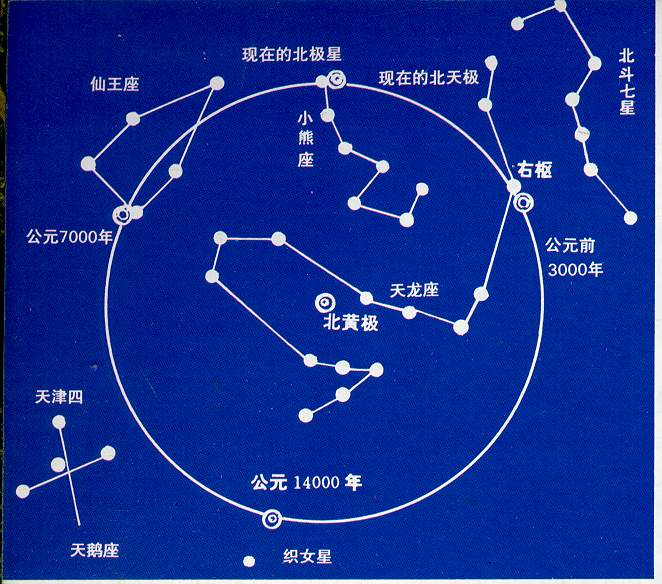
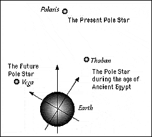
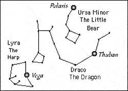
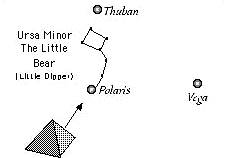
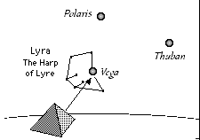

凯西之地轴移动

John Van Auken文
云思腾译
美国宇航局NASA的最新研究报告说，智利大地震导致地轴的偏移并使得每一天变得短了一些。有许多朋友对凯西的地轴移动更加关注了。
有人问及这样的问题："如果在2000年或者2001年有大的改变和开始改变的话，是什么样子的？"凯西回答道："届时会有地轴的移动，或者说新循环的开始。"
玛雅人也注意到本世纪初的新时代的开启，但他们的文物解读显示，我们目前的纪元结束于2012年12月21日。
天文学家们都知道地轴的晃动，在各个不同的时代发生过，是的地球的北极指向不同的北极星。至于这种移动是如何发生却没有定论。主流大致可以同意的一点是，这样的地轴移动每几百万年，甚至几亿年才发生一次，并且需要上百万年才完成转动。但有另外一些可信的资料表示，地轴的挪移大约每2万4千到2万6千年发生一次.在印度教里，一个梵天日大约等于24,000年,，就是一个卡利劫（Kali-kalpa）。
凯西资料表明，古埃及人明白这样的转移，并且把大金字塔建设成指向北极的方向。
凯西确实给出过关于指向北极星的地球轴线移动的解读。他解释道，吉萨高地上的大金字塔的设计代表了我们人类经历每个世代。解读这么说，“在恰当的时刻，可以从大金字塔画出一根延长线直至伟大的小熊星座的第二颗星，这颗星就是北极星” (SAO 209 是小熊星座的第一颗星，但基本上图片都没有画出)

图1， 地球的北方旋转轴线指向北极星。根据凯西资料，在古埃及，我们的北极指向的是天龙座的右枢星（Thuban）。而现在，我们将会看到我们的北极星从小熊星座的Polaris移到天琴座的织女星（Vega）。这个移动标志着我们进入了新时代。
凯西说，“这表明了在完成太阳系的功课后的灵魂，前往的方向。大勺星座在缓慢的变化，当这种变化达到可观的程度时---这可以从金字塔计算出来---人类将要开始有人类种族的变化。将会有来自亚特兰提斯、蓝玛尼亚Lemuria）、La、Ur或Da文明的灵魂的巨大影响。”
他接着解释道，大金字塔是由拉（Ra）和Hermes以及其他人精心设计建立的，“希望为人类更好的理解原创动力和造物、人与人还有人类和缔造者之间的关系”。
他也提醒我们说，“只有那些被召唤，才可能真正理解其含义。那么，谁是被召唤的呢？那些愿意把自己当成祝福和推恩管道的人们....”
我们来看看大金字塔的入口与北极星的关系。在下面的图示和说明中，我们会看到有三个与地球有关的北极星Thuban, Polaris, 和Vega。在古埃及时代Thuban 是地球北极指向的北极星，就是午夜时分北极的指向。Thuban曾经是最北面的星星，而现在却是小熊星座的Polaris。Vega将会成为下一个。但这个改变需要我们这个蓝色星球转动得戏剧化一点！

图2，从北极来观察：从Thuban到Polaris的角度大约是26°，而从Polaris到Vega则是大约51°
如果在这三个年代（公元前4000年、公元200年、公元10000年）的春分日从金字塔的入口画一条延长线，这条线会分别指向当时的北极星： Thuban, Polaris,和Vega。Hermes, Ra等古代智者当然知道他们在建设金 字塔时应该做什么。
图3，在古埃及的春分，Thuban是金字塔的北极星
凯西资料说北极星Polaris表明了"太阳系统灵魂前往的方向"，那么新北极星Vega是不是表示一种全新的格局和方向？Vega是一颗蓝白星，是天空第五最亮的星星，位于天琴座内。天琴就是乐师奥菲斯（Orpheus）使用的乐器。传说当Orpheus弹起乐器时无论人或神都无法走开 。还有一点很有意思，Vega标记出了我们的太阳系在太空中穿行的大致方向。

图4，我们的这个时代在春分时，北极指向Polaris，大金字塔的延长线也是如此。
现在的问题是：如果需要北极从指向Thuban到Polaris的话，地球需要转移地轴大约26°，而如果让地轴从指向Polaris转向Vega，地轴需要大约51°！如果这是一个缓慢的过程，这将是一个非常漫长的过程。凯西也同意这样的说法。我们不应该期盼在未来的几年中，地轴有这样戏剧性的转移。但我们应该很高兴的知道目前的世代即将过去，新时代正在走来。

图5，将来的春分日，金字塔的延长线将指向新北极星Vega。
许多熟悉凯西资料的朋友都知道，在这个即将到来的新时代里，我们将慢慢记起并掌握我们在亚特兰蒂斯时代和姆时代（Lemuria or Mu）失去的能力。那时我们的灵魂尚没有像现在这样被囚禁在躯壳里面。我们可以运用这些神的能力来解决我们的物质所需。当然，凯西警告我们要小心这些能力的使用，否则我们仍然会像古老的那些大陆一样毁灭。
当被问及到新时代到底对人类意味着什么时，凯西回答到。“有完全的与原创动力直接交流的意识，明白与原创力量（上帝）的关系，并知道其在物质环境的正确运用。这些能量的使用给亚特兰蒂斯和Lemuria（Mu）带来了什么？人类的灭顶之灾！并导致人类开始其籍由自私而开始的回家之路。”(解读1602-3)
Source: http://blog.sina.com.cn/s/blog_4c7962c90100hglb.html